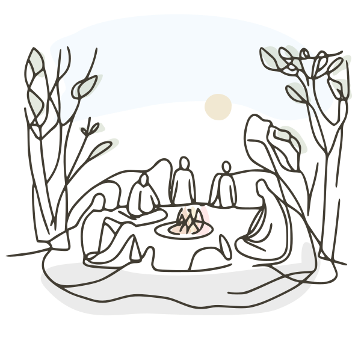
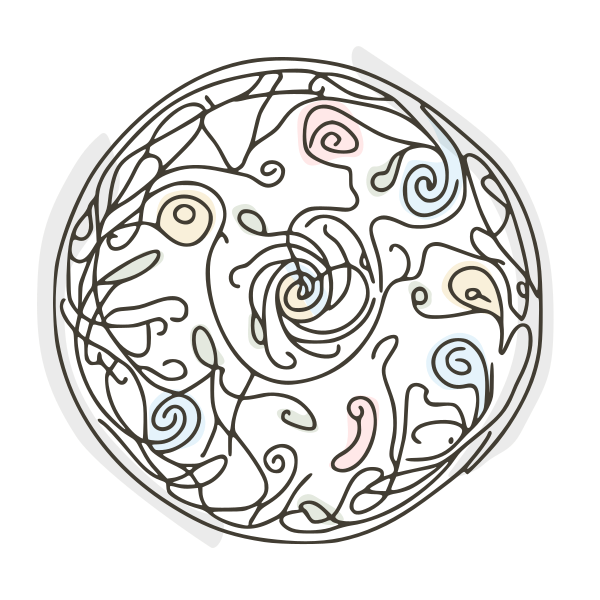
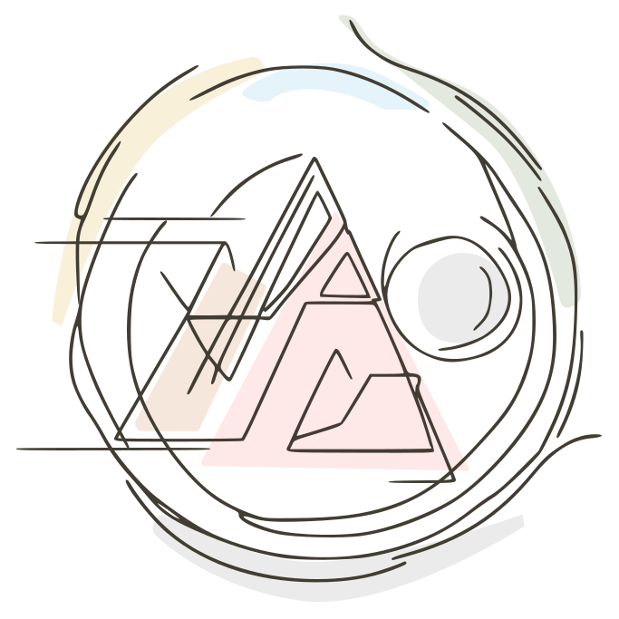
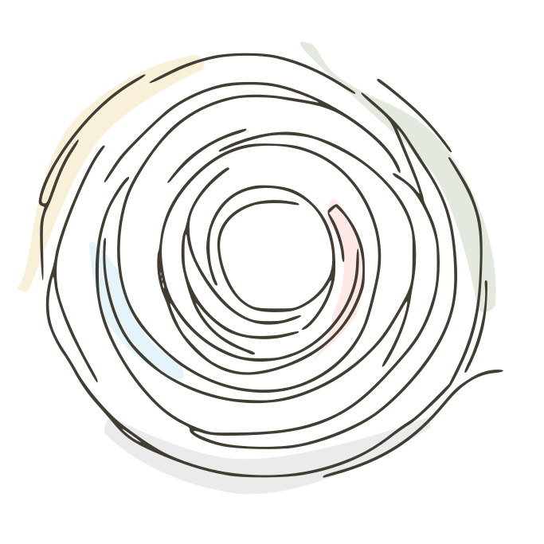

1. Invite 2–6 people
Neighbours. Friends. Colleagues. People you sense might be ready for something deeper than small talk. Send a simple message: "I'd like to try gathering a small circle to be present together, share what's alive in us, and listen. No agenda. Interested?"


2. Choose a place
Your backyard. A living room. A park bench. A community garden. Somewhere you can sit facing each other without distraction. Outdoors is wonderful if you can. The land is part of the circle too.
3. Pick a rhythm
Weekly is ideal. Fortnightly works. Monthly is the minimum for trust to build. Same time, same place. Consistency is what turns a meeting into a practice, like a heartbeat that the group can rely on.


4. Gather and begin
Arrive. Settle. Breathe together. Then use the simple practice below. That's it. No preparation needed beyond showing up with an open heart.